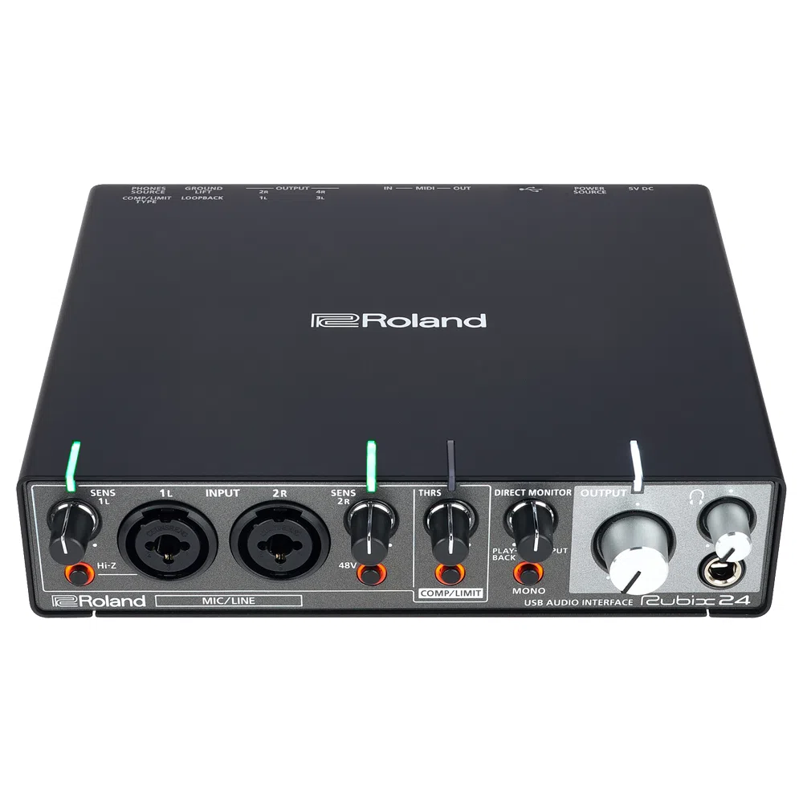
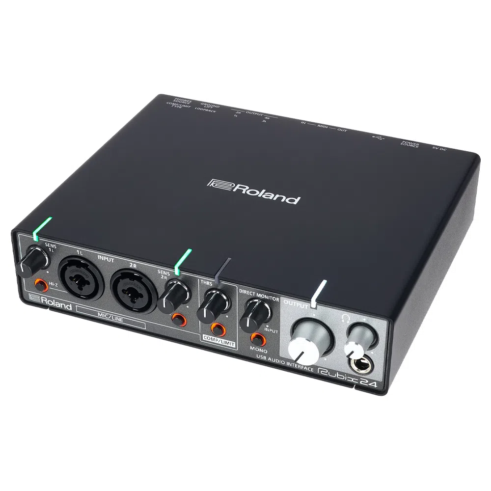
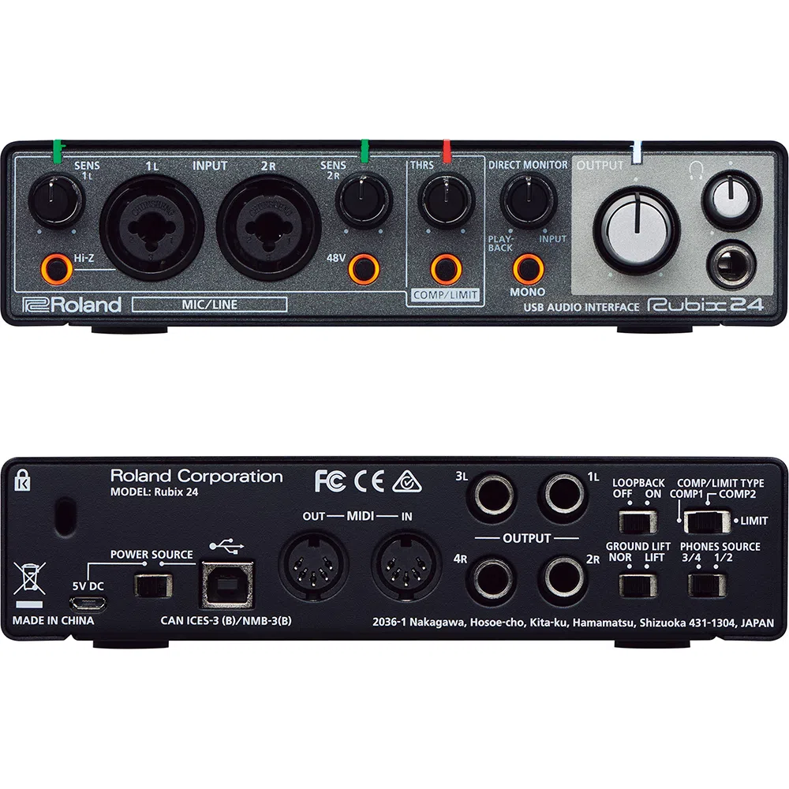
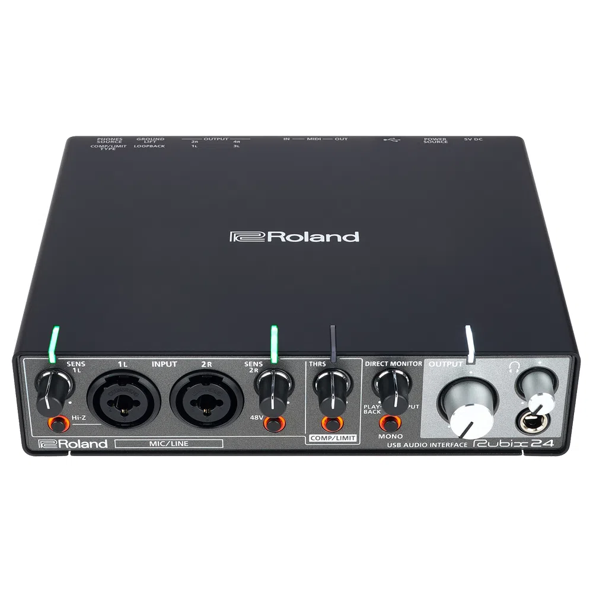
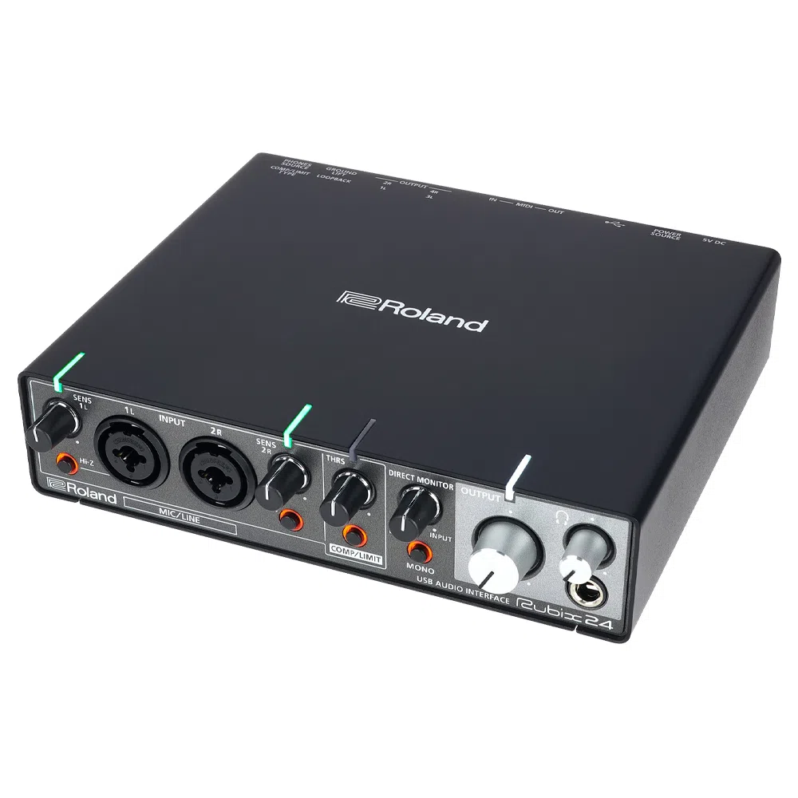
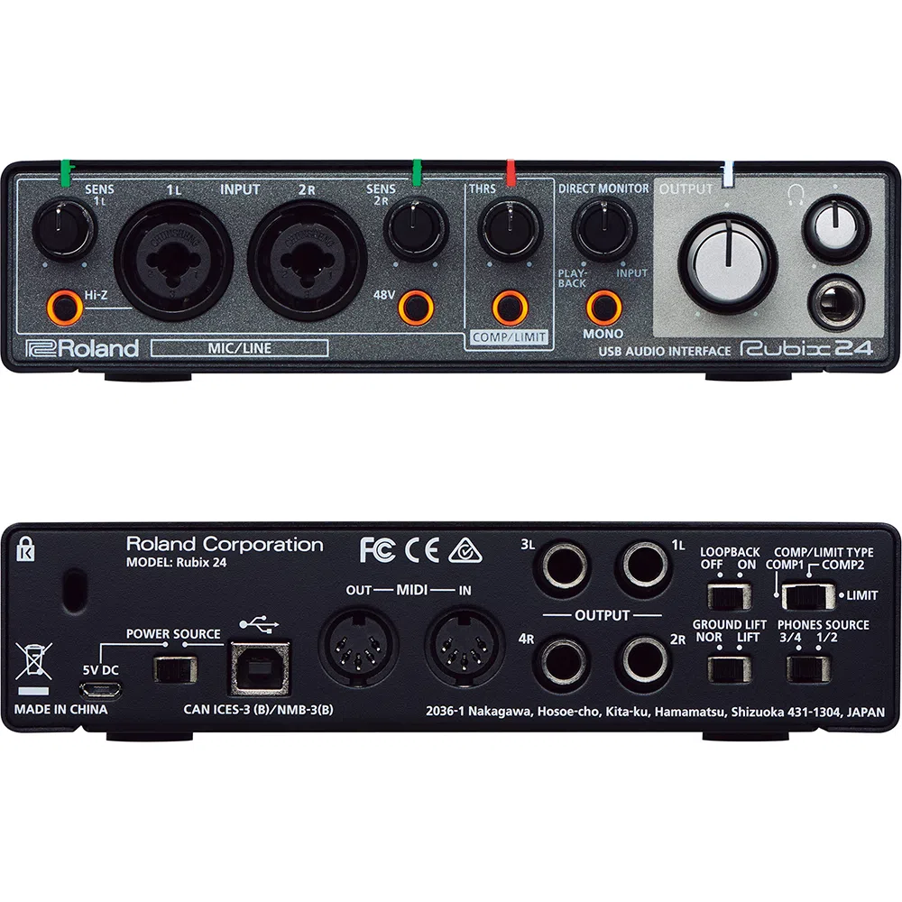

Interface Roland Rubix24 Black 2 In 4 Out MIDI/USB
Sobre
ROLAND RUBIX24 INTERFACE DE ÁUDIO PARA MAC, PC E IPAD COM 2 ENTRADAS E 4 SAÍDAS
A Rubix 24 oferece um equilíbrio perfeito entre som de alta fidelidade, estrutura sólida, tamanho compacto, preço acessível e recursos fundamentais
para músicos e produtores.
Com suporte para áudio de alta resolução em até 24 bits / 192 kHz, a Rubix 24 tem um som claro e definido, e foi desenvolvida cuidadosamente para
proporcionar um nível de ruído extremamente baixo da entrada até a saída.
A compatibilidade com o padrão USB faz com que ela funcione perfeitamente com computadores Mac ou PC, e até mesmo com iPads, para atender às
necessidades modernas de produção e performance de música em dispositivos portáteis.
R$2.245,00 à vista